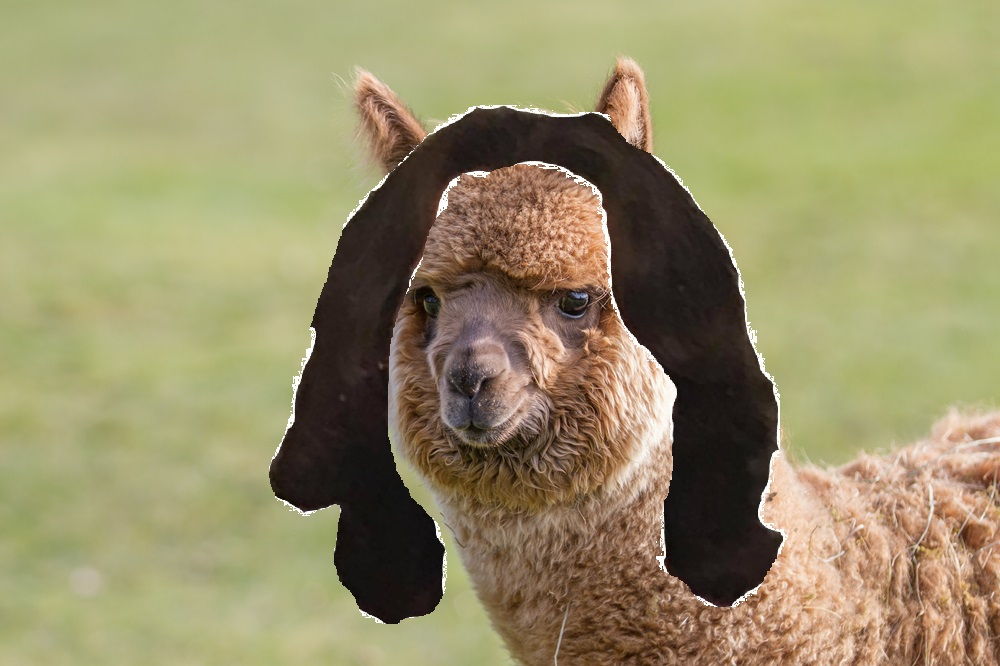
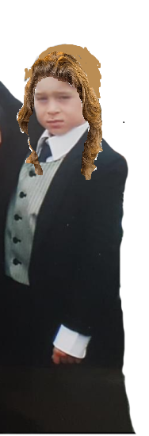
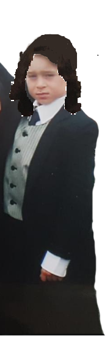
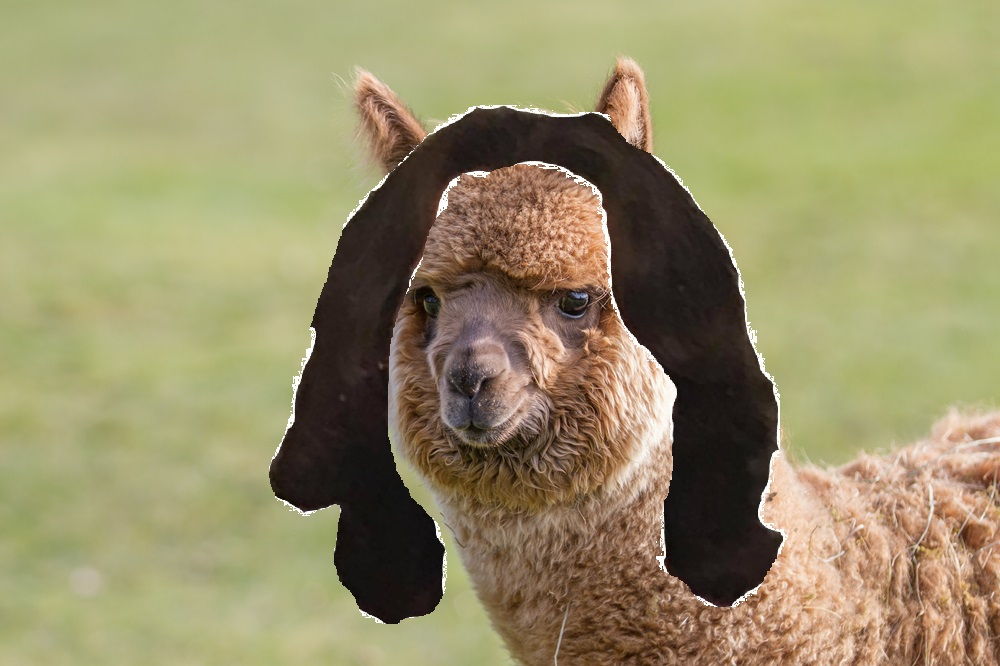
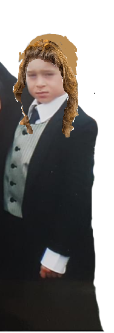
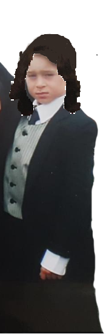
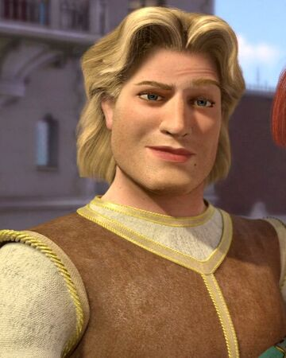
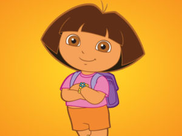

Synopsis: A philisophical debate on whether Participant A or B have better hair, and which wore thier hair to thier maximum potential. Taking an unbiased, objective view, using mathimatical models, and philisophical greats such as Bob Ross, Sun Tsu, DJ Kaled etc. to discern a ground breaking topic of mens hair, and which of the example participants has the most lushes of locks.
Left: Participant A
Right: Participant B
No monkeys or certain chickens were harmed in the research of this topic. This does not include the alpaca or alligator which were used for the local pot luck luncheon and were delightfully delicious.
With such staples of human mysticism such as these, connoisseurs around the world are stuck in a standstill on whom is the most fairest. To bare witness to such beings, I have the deepest of honor to analyzing thier sublime intracacies. Relating to mathematical phenomenons, great thinkers, and the relatability of these two forces of nature in a hopes to dicern who in fact wore thier hair better. As DJ Kaled so eloquently put it, " You gotta water your plants...", emphasizing the need for proper nourishment of the melon situated on that pole of a neck everyone has.
Michael Angelos Human - added anomnimity for hired model
Symmetry algoritm result of both Participants
When looking at it mathematically, we need to consider symmetry through Michael Angelo’s ideal human being. We need to analyze symmetry in the way the hair falls. As seen in the picture below, using hyper aggressive programming monkeys to contrive an algorithm, we can see that Participant A has some asymmetry in the top, but better overall symmetry. This is most definitely caused by the ineptitude of the photographer of Participant B, since it wasn’t centered and taken directly infront of the participant. This results in the winner to be Participant A, as well as the photographer for Participant B to be formally executed through firing squad.
Viewing the hair as an independent entity, two perspectives can be taken; how well it looks independent of the holder, or how well its potential is fulfilled by that particular holder. Taking the hair from the participants, the hair is situated on the heads of beings of unfortunate circumstance, and see how well their appearance improves to the viewer. Looking at the results of the Alpaca and the Alligator, (insert results). As seen on the monster we obtained from the depths of a subterranean cave, we can say that this test is invalid, due to the fact that this subject was a monster because his awesomeness was too good. Therefore a different study should be made on this subject and will be researched independently of this. The end of this section of the study concludes that (insert results)
 





Relating subjects to certain pop-culture icons of the millenium, and seeing which compares to that icon the best. Reviewing and delving into the archives of humanity relations to Prince Charming was made for Participant A, and Dora to Participant B. This brings the 'beauty in the eye of the beholder' conundrum, as what is more beautiful, a spanish girl exploring the world? or a Prince that is Charming. Using the same monkeys in a poll, we were able to see that bananas won by an overwhelming margin. Since bananas wasn't an option, we conclude this to be a draw in this situation.
 After spending many a morning contemplating this mystery, meditating and centering my chakra, I have come to an conclusion. In conclusion to this debate, we realize that no one is more beautiful than Tsar Peter, the beloved leader of our motherland. As seen from his eyes, all comrades are viewed as equal, and will work to devlope a better Motherland.